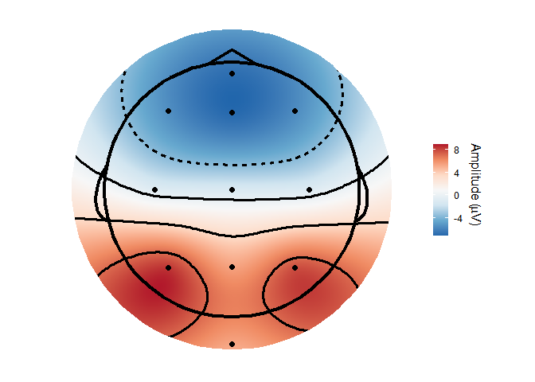

Overview
eegUtils is a package for the processing, manipulation, and plotting of EEG data. It includes functions for importing data from a variety of file formats (including Biosemi, Brain Vision Analyzer, and EEGLAB), many of the typical steps in pre-preprocessing (filtering, referencing, artefact rejection), more advanced processing techniques (time-frequency analysis, ICA), and several types of plot that are common in the field (ERP plots, time-frequency plots, topographical scalp maps). Although it uses custom object classes, it is designed such that these are always translatable to standard R data.frames, and thus can be used with any of the myriad packages and methods that support standard R formats.
Installation
The package is very much under active development and is subject to a lot of changes. As such, it is not currently available on CRAN.
Install the latest released version from Github as below.
#install.packages("remotes")
remotes::install_github("craddm/eegUtils")To install the latest development version, install from the develop branch as below.
remotes::install_github("craddm/eegUtils@develop")You can also find the package on Neuroconductor - for more information about installing packages from Neuroconductor, see the Neuroconductor installation tutorial
Usage
The following examples show how to use eegUtils to produce a few common plots of EEG data from some simple included example data.
ERP butterfly plots
library(eegUtils)
#>
#> Attaching package: 'eegUtils'
#> The following object is masked from 'package:stats':
#>
#> filter
plot_butterfly(demo_epochs)
#> Joining, by = c("epoch", "recording", "epoch_label", "participant_id")Topographical plots
topoplot(demo_epochs,
time_lim = c(.22, .25 ))
#> Joining, by = c("epoch", "recording", "epoch_label", "participant_id")
#> Using electrode locations from data.
Time-frequency analysis
plot_tfr(compute_tfr(demo_epochs,
foi = c(4, 30),
n_freq = 20,
n_cycles = 3))
#> Output frequencies: 4 5.37 6.74 8.11 9.47 10.84 12.21 13.58 14.95 16.32 17.68 19.05 20.42 21.79 23.16 24.53 25.89 27.26 28.63 30
#> Removing channel means per epoch...There are many potential processing steps that precede the production of plots like these. For more examples of how to import and process data, or import data from other sources, see the eegUtils website
Contributing
If you have any bug reports or feature requests, please report them using the Github issue tracker.
If you would like to contribute any code, be that anything from a documentation fix to a whole new feature, then please begin by raising an issue before moving on to file a Github pull request.
You can find a guide to how Github issues and pull requests work here.
Code of Conduct
Please note that the eegUtils project is released with a Contributor Code of Conduct. By contributing to this project, you agree to abide by its terms.